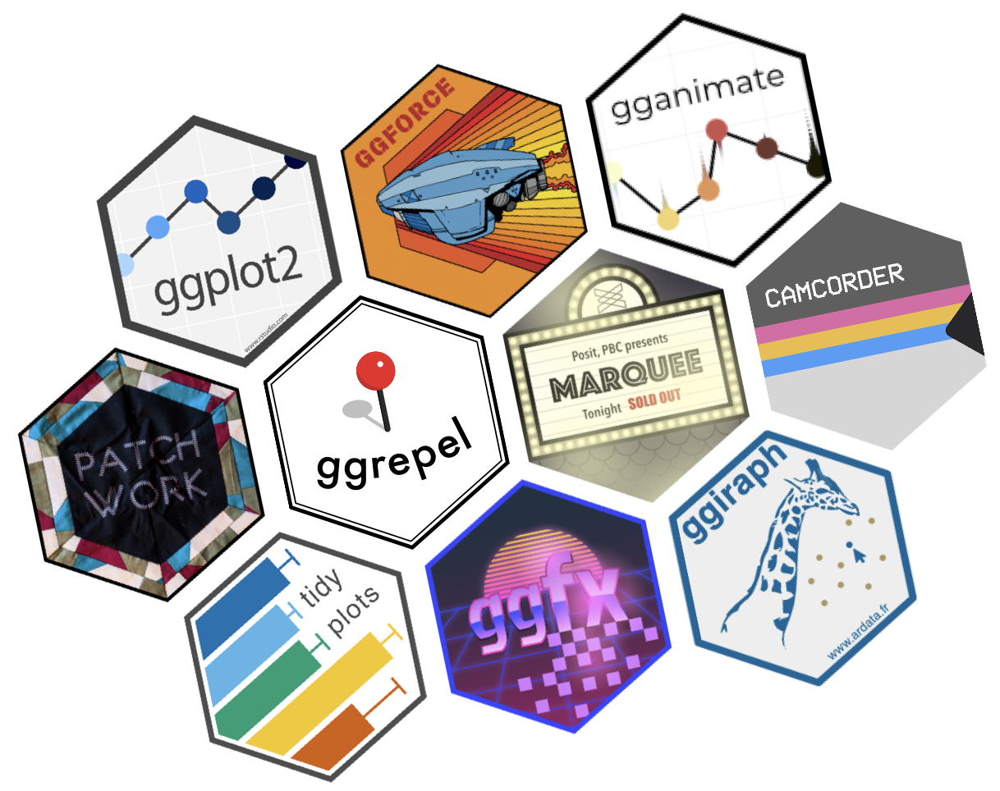

Extensiones recomendadas para mejorar tus gráficos de {ggplot2}
27/3/2026

Una de las ventajas de usar {ggplot2} para visualización de datos en R es su flexibilidad y capacidad de personalización. Existen
muchas extensiones desarrolladas por la comunidad para agregar nuevas funcionalidades, formas de visualizar datos, mejoras, paletas de colores y más.
A continuación, compartiré acá enlaces a las extensiones de {ggplot2} que más uso y/o que recomiendo:
Extensiones generales
tidyplots
Paquete que simplifica la creación de gráficos atractivos y simples de hacer en R, basándose en {ggplot2}. Facilita mucho la generación de visualizaciones profesionales y estadísticas.
camcorder
Al activarlo, empieza a grabar todos los pasos de las visualizaciones que hagas, de manera que al terminar la visualización puedes obtener una animación del proceso de su desarrollo. Muy entretenido para poder compartir videos de cómo hiciste un gráfico! Tutorial de uso aquí.
patchwork
Con esta extensión se pueden unir y combinar múltiples gráficos de {ggplot2} tan sólo usando operadores como + y otros; es decir, simplemente sumando dos gráficos obtienes una visualización de gráficos combinados. Esto nos permitirá construir visualizaciones más densas, por medio de la combinación de gráficos en una sola visualización, y la inserción de gráficos dentro de otros.
Tutorial de uso aquí.
ggiraph
Este paquete agrega interactividad a los gráficos {ggplot2}. Esto significa que tus gráficos podrán mostrar información extra al pasar el cursor encima (tooltips), hacer que se destaquen u oculten elementos al pasar el cursor, hacer clic en elementos del gráfico para generar cambios en aplicaciones, y más. También es posible combinar la interactividad de dos o más gráficos, lo que permite crear visualizaciones más complejas.
Tutorial de uso aquí.
ggforce
Agrega nuevas geometrías, estadísticas, y facetas a {ggplot2}. Algunas de sus funcionalidades son: ahcer cuadros o círculos que envuelvan tus datos, distintas marcas y flechas para anotaciones, envolver puntos con figuras, crear facetas que amplían tus gráficos, geometrías Voronoi, gráficos aluviales, y más.
Geometrías
ggrepel
Este paquete agrega geometrías como geom_text_repel() que permiten que las etiquetas de texto en tus visualizaciones no se sobrepongan, haciendo que se muevan para mantenerlas visibles. Muy útil para gráficos de dispersión con demasiados textos.
Tutorial de uso aquí.
corrr
Agrega la función ggcor() para crear gráficos de correlaciones, que muestran las relaciones entre variables en una de matriz de colores.
Tutorial de uso aquí.
ggwordcloud
Agrega la geometría geom_text_wordcloud() para crear nubes de palabras, que muestran las palabras más frecuentes en un texto, con tamaños y colores que representan su frecuencia.
Tutorial de uso aquí.
geomtextpath
Agrega geometrías como geom_textpath() que permiten colocar texto que siga una cirva o cualquier tipo de línea.
ggbump
Agrega la geometría geom_bump() para crear gráficos de ranking o cambio de posiciones.
marimekko
Un paquete que permite crear gráficos de mosaico con geom_marimekko(), que permiten controlar el área de los rectángulos para representar dos variables categóricas al mismo tiempo.
ggbeeswarm
Agrega la geometría geom_beeswarm() para crear gráficos de enjambre, que muestran distribuciones de datos (como gráficos de densidad o violín) pero por medio de puntos que representan las observaciones.
ggtext
Este paquete agrega geometrías como geom_richtext() que permiten darle estilo personalizado a los textos de tus gráficos: agregar colores, negritas, itálicas, personalizar tamaños y espaciados, y más usando HTML.
ggridges
Agrega la geometría geom_density_ridges() para crear gráficos de densidad apilados, que tienen la apariencia de cordilleras, y permiten mostrar distribuciones de datos desagregados por categorías.
ggstream
Agrega la geometría geom_stream() para crear gráficos de flujo o de corrientes, que muestran cómo cambian las proporciones de distintas categorías a lo largo del tiempo u otra variable.
Ejemplo de uso.
ggalluvial
Gráficos de flujos o aluviales, que muestran cómo cambian las proporciones de distintas categorías a lo largo del tiempo u otra variable. Ejemplo de uso.
ggfittext
Agrega la geometría geom_fit_text() para colocar texto dentro de áreas o formas, ajustando automáticamente el tamaño del texto o haciendo cortes de línea para que el texto se ajuste al espacio disponible.
Escalas y leyendas
ggnewscale
Permite agregar múltiples escalas de colores a un mismo gráfico, algo que a veces se requiere en visualizaciones complejas. Por ejemplo, si quieres usar una escala de colores para los puntos de un gráfico de dispersión y otra escala de colores para las líneas de tendencia.
legendry
Expande las posibilidades de las leyendas y escalas de tus gráficos, agregando rangos encima de los ejes, varias guías simultáneas, corchetes que explican aspectos de los ejes, y más.
Paletas de colores
viridis
Colección de paletas de colores perceptualmente uniformes, accesibles para personas con daltonismo, y que también funcionan en blanco y negro.
ggsci
Colección de paletas de colores científicas, inspiradas en revistas académicas y cultura pop
scico
Paletas de colores científicas caracterizadas por ser perceptualmente uniformes y accesibles para personas con daltonismo.
Utilidades
ggview
Permite poner la función canvas() al final de tus gráficos para delimitar el tamaño de los mismos, y que así el tamaño de la previsualización del gráfico no dependa de tu ventana. Sirve mucho para desarrollar las visualizaciones considerando el tamaño específico con el que vas a guardarlas.
Tutorial de uso aquí.
gghighlight
Permite resaltar valores específicos de tus gráficos, como ciertos puntos, líneas o áreas, para llamar la atención a ciertos datos o simplificar visualizaciones complejas.
Avanzadas
ggblend
Permite mezclar capas de tus gráficos usando distintos modos de mezcla, como multiplicar, superponer, oscurecer, aclarar, y más. Esto te permitirá crear visualizaciones con efectos visuales interesantes y resaltar ciertas partes de tus gráficos.
gganimate
Ofrece la capacidad de crear visualizaciones de datos animadas con {ggplot2}, usando variables que especifican cómo cambia el gráfico a través del tiempo.
ggstatsplot
Extensión que hace posible agregar detalles estadísticos, combinando al visualización de los datos con el modelado y la aplicación de técnicas estadísticas.
Más extensiones
Existen varias listas de extensiones de {ggplot2}:
-
Awesome
ggplot2 - Lista oficial de extensiones
- Galería interactiva de extensiones
-
Libro
ggplot2extended, de Antti Rask
Publicaciones sobre visualización de datos